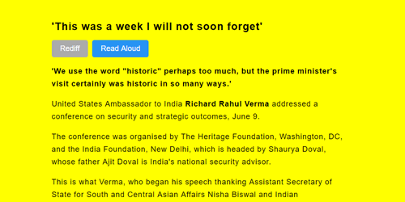
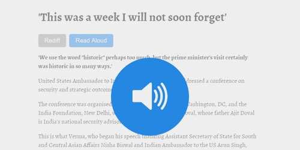
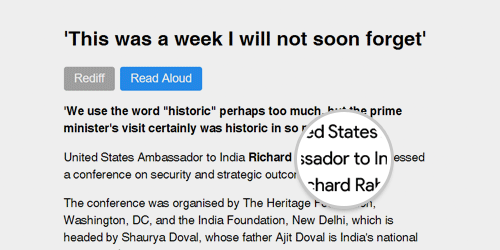
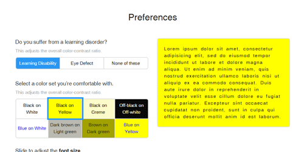

Oswald works for everyone.
Learning Disabilities
Based on the specifications provided by the British Dyslexia Association and the World Wide Web Consortium, Oswald automatically corrects the typography, contrast ratios, and other visual elements on a webpage to make reading easier for users with learning disabilities. Users can also customize Oswald’s properties based on their personal preferences.
Visual Impairment
On the press of a button (or a key), Oswald extracts all relevant content on a webpage and reads it out in a language of the user’s choice. Oswald can also translate that text into another language, and visually impaired users only have to press a few keyboard shortcuts for all of this.
Senior Citizens
Senior citizens who are not used to browsing the web can switch to Oswald’s Reading Mode which removes all unnecessary links, ads, and popups, and presents the relevant content in a beautiful readable format. They can also easily change the font size and contrasts based on their eye defects.
Everyone Else
Oswald is incredibly customizable, and users can easily change all properties and styles like text color, font family, and image contrasts for a consistent experience across the web.